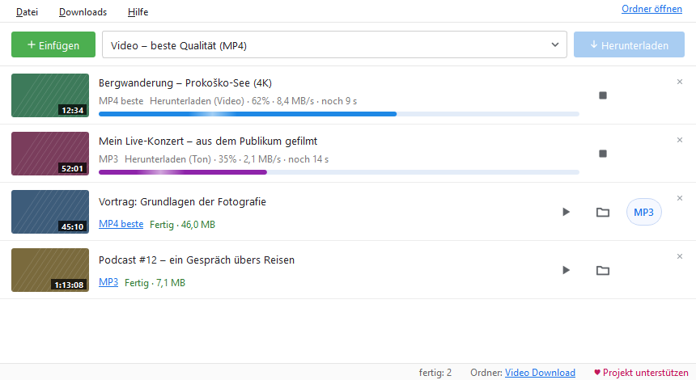
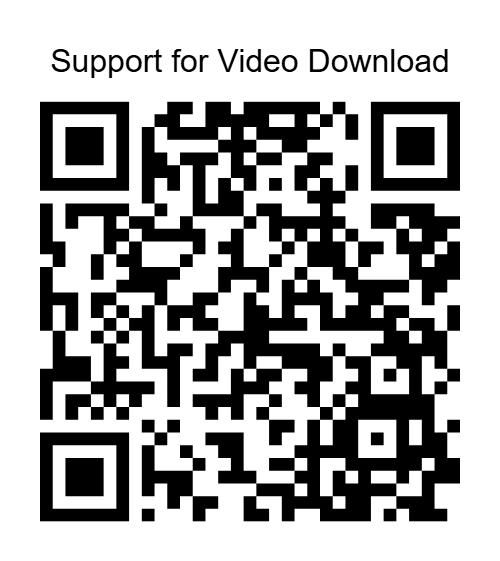

Video und Audio.
Mit einem Klick.
Eine kostenlose App für Windows und Mac: MP4 in voller Qualität oder MP3, direkt aus dem Browser oder aus einem kopierten Link.
- Kein Konto
- Kein Tageslimit
- Deine Links landen nicht bei uns
Die App ist für eigene Videos gedacht, für Inhalte, für die du die Erlaubnis des Urhebers hast, und für Inhalte unter freier Lizenz. Mit dem Herunterladen akzeptierst du die Nutzungsbedingungen. DRM-geschützte Inhalte werden nicht heruntergeladen.
Probier's aus: klicke auf + Einfügen.
Alles, was du brauchst.
Nichts, was du nicht brauchst.
Ein einfaches Fenster – und darunter alles, was du von einem guten Downloader erwartest.
MP4 bis zur besten Qualität
Beste, 1080p, 720p oder 480p. Bild und Ton werden zu einer MP4 zusammengeführt (H.264/AAC, wenn die Seite es anbietet), die auf den meisten Geräten läuft.

Nur Ton: MP3 oder M4A
Für Vorträge, Podcasts und Musik. Eine fertige MP4 wird mit einem Knopf zur MP3.
Link kopieren, fertig
Die App bemerkt einen kopierten Link und fügt ihn der Liste hinzu.
Playlists, mehrere gleichzeitig
Ganze Playlists, bis zu 4 Downloads gleichzeitig, automatisch ein neuer Versuch, wenn die Verbindung abbricht.
Ausschnitte, Untertitel, Cover
Nur ein Teil eines Videos, Untertitel in der MP4 und das Vorschaubild als Cover der Datei.
Helles und dunkles Design
Oder wie das System. Fortschritt in der Taskleiste und eine Benachrichtigung am Ende.
Immer aktuell – und sicher
Die App sucht selbst nach neuen Versionen, aktualisiert den Teil, der Webseiten liest, ohne Neuinstallation. Unter Windows und auf dem Mac installiert sie nur Updates, die wir digital signiert haben.
Lade herunter, was gerade läuft.
Video abspielen, auf das Symbol klicken, fertig. Oder Rechtsklick auf einen Link oder ein Video. Läuft die App nicht, startet sie von selbst.
- Firefox: ein Klick, von Mozilla signiert, aktualisiert sich selbst
- Edge und Chrome: einmal aus dem App-Ordner geladen
- Livestreams und DRM-geschützte Videos werden nicht heruntergeladen
Die erste Datei in wenigen Minuten.
Einmal installieren, dann nur noch Links kopieren.
Installieren
Keine Administratorrechte nötig, installiert nichts anderes auf deinem Computer.
Link hinzufügen
Link kopieren, auf „Einfügen“ klicken oder die Erweiterung nutzen.
Herunterladen
MP4 oder MP3, dann „Herunterladen“. Die Datei wartet im Ordner Video Download.
Der erste Start, Schritt für Schritt.
Die App hat noch kein kostenpflichtiges Zertifikat, daher fragt dein System einmal nach. Updates aus der App heraus fragen nicht.
Windows zeigt eventuell „Der Computer wurde durch Windows geschützt“. Prüfe, dass die Datei von dieser Seite stammt, und klicke dann auf Weitere Informationen und Trotzdem ausführen.
Beta Neu: Video Download für Mac. Für Macs mit Apple-Chip (M1 oder neuer) und macOS 13 oder neuer. Es funktioniert, aber bisher haben es erst wenige ausprobiert: melde bitte, was nicht klappt.
Die Mac-Version ist noch nicht von Apple signiert, daher braucht der erste Start ein paar Klicks mehr:
- Öffne die geladene .dmg und ziehe Video Download in den Ordner „Programme“.
- Öffne das Programm. macOS meldet, dass es nicht überprüft werden kann: Schließe die Meldung (nicht „In den Papierkorb legen“).
- Öffne Systemeinstellungen → Datenschutz & Sicherheit, scrolle nach unten, klicke auf Dennoch öffnen und gib dein Mac-Passwort ein.
- Öffne das Programm erneut und bestätige mit Öffnen. Das ist nur einmal nötig.
Beta Neu: Video Download für Android. Für Handys mit Android 10 oder neuer. Teile ein Video aus einer beliebigen App und wähle die Qualität. Es funktioniert, aber bisher haben es nur wenige ausprobiert: melde bitte alles, was nicht klappt.
Die App ist nicht bei Google Play, daher braucht die erste Installation ein paar Fingertipps mehr:
- Öffne die heruntergeladene Datei (Downloads oder Downloadliste des Browsers).
- Wenn Android fragt, erlaube Installationen aus deinem Browser: Einstellungen → Von dieser Quelle zulassen.
- Auf Samsung-Handys für die Installation den Auto Blocker ausschalten (Einstellungen → Sicherheit und Datenschutz).
- Wenn Google Play Protect vor einer unbekannten App warnt, tippe auf Weitere Details → Trotzdem installieren.
- Neue Versionen installierst du direkt in der App: Einstellungen → Nach Updates suchen.
Für Android herunterladen (Beta)
Nutzt du Obtainium? Es installiert die App direkt von GitHub und hält sie aktuell. Zu Obtainium hinzufügen →
Jede Woche besser.
Dieselbe Liste wie in der App (Hilfe → Was ist neu).
0.9.9 4.10.2026
- Neues Fenster Einstellungen (Zahnrad neben „Herunterladen“ oder Datei → Einstellungen, Strg+,): alle Optionen an einem Ort, in Gruppen.
- Tabs über der Liste (Alle, Läuft, Wartend, Fertig, Fehlgeschlagen) und Kennzeichen an fertigen Dateien: Format, echte Auflösung und Größe.
- Ändert eine Seite etwas, bietet Hilfe → Seiten-Reader aktualisieren auch die Nightly-Version von yt-dlp mit den neuesten Korrekturen an; die automatische yt-dlp-Aktualisierung ist ebenfalls repariert.
- Beiträge gehen jetzt auch per Karte, Apple Pay oder Google Pay oder über Ko-fi, ohne PayPal-Konto.
- Der Fortschrittsbalken bleibt nicht mehr an einer Zeile, die fertig wurde, während das Fenster verborgen war; der leere Bildschirm erwähnt auch die Browser-Erweiterung.
0.9.8 3.10.2026
- Downloads → Jugendschutz, auf Wunsch mit PIN geschützt.
- Hilfe → Problem oder Vorschlag melden: öffnet eine E-Mail an den Autor, mit der Programmversion.
- Die Mac-Version aktualisiert sich jetzt selbst wie unter Windows: Sie lädt die neue Version, prüft unsere digitale Signatur und ersetzt das Programm (ab der nächsten Version).
- Kleinerer Installer (etwa 117 MB statt 130 MB), ohne Teile, die das Programm nicht nutzt.
- Eine klarere Meldung, wenn eine Seite für einen Beitrag eine Anmeldung verlangt.
0.9.7 27.9.2026
- Verständliche Fehlermeldungen in der Sprache des Programms (z. B. „Das Video ist nicht mehr verfügbar“, „Keine Verbindung zur Seite“); die technische Meldung bleibt im Tooltip und im Problembericht.
- Zwei Downloads schreiben nie in dieselbe Datei: weder dasselbe Video über zwei Links noch lange Titel mit gleichem Anfang noch Ausschnitte innerhalb derselben Sekunde; eine MP3 desselben Videos löscht die schon geladene MP4 nicht mehr.
- Die Liste speichert sich nach jeder Änderung selbst, daher gehen bei einem Absturz oder Stromausfall keine Links verloren; „Alle herunterladen“, während ein Link noch gelesen wird, startet, sobald der Link da ist.
- „Stoppen“ hält auch die MP3-Umwandlung an, während „Alle aus der Liste entfernen“ und „Fertige entfernen“ eine MP3 behalten, die noch entsteht; das Schließen startet keine neuen Downloads mehr.
- Ein neuer Versuch nach einem Verbindungsabbruch wartet wirklich 5 Sekunden; der Problembericht verbirgt Passwörter und Schlüssel gründlicher.
- Die Browser-Erweiterung öffnet bei der Installation eine Willkommensseite (prüft die Verbindung zum Programm, zeigt das Anheften des Symbols); größere ×-Schaltfläche und schöneres Bild, solange das Vorschaubild lädt.
Die App ist kostenlos.
Ohne Werbung, ohne Tracking und ohne „Premium“-Version. Wenn sie dir nützt, kannst du ihre Entwicklung freiwillig unterstützen. Ein Beitrag schaltet nichts frei: Die App ist für alle gleich.

Mit der Handykamera scannenFragen?
Wenn etwas nicht klappt: in der App Hilfe → Problembericht speichern, dann das Problem melden. Meldungen sind öffentlich: keine Passwörter oder persönlichen Daten angeben.
Ein Video lässt sich plötzlich nicht mehr herunterladen.
Webseiten ändern sich oft. Hilfe → Seiten-Reader aktualisieren (yt-dlp), dann erneut versuchen.
Warum werden Livestreams nicht heruntergeladen?
Ein Livestream hat kein Ende, der Download würde also nie fertig. Lade ihn herunter, wenn er vorbei ist und die Aufzeichnung veröffentlicht wurde.
Was sendet die App ins Internet?
Nur das Nötige: Der Link, den du herunterlädst, geht an diese Webseite, und die Update-Prüfung an GitHub und PyPI. Keine Konten, Statistiken oder Tracking.
Ist die App sicher?
Der Code ist öffentlich auf GitHub, jeder Installer hat eine SHA-256-Prüfsumme, und die App installiert unter Windows und auf dem Mac nur Updates, die wir digital signiert haben.